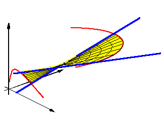
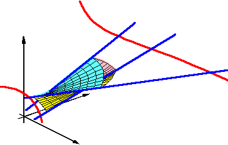

|  |
Convexity for lines in Rd Frank Sottile |
 |
Convex subsets in Rd play an important role in Discrete and Computational Geometry. A cornerstone of the theory of convexity is Helly's Theorem from 1923 which states that if there is a point in common to every d+1 (or fewer) members of a finite collection of convex sets in Rd, then the whole family has a point in common. The usefulness of such a basic numerical result led to a search for similar results for other objects besides points, for example line transversals to convex sets in Rd. While that is impossible in general, in 1940 Santalo proved a Helly-type result for line transversals to boxes in Rd.
This talk will describe these foundational results in Convex Geometry and discuss how an analysis of Santalo's arguments leads to a new and very pleasing convexity structure on ascending lines in Rd, one that is related to some interesting geometry of the Grassmannian of lines. For example, the two pictures above are the convex hull of two lines in R3 (on the left) and the convex hull of three lines (on the right).